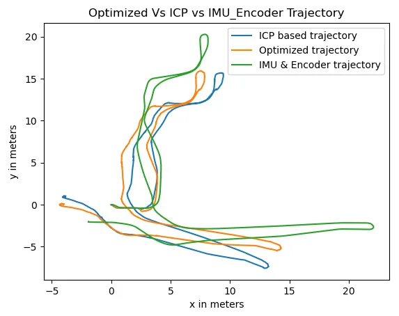
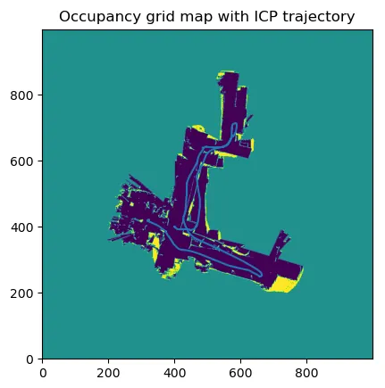
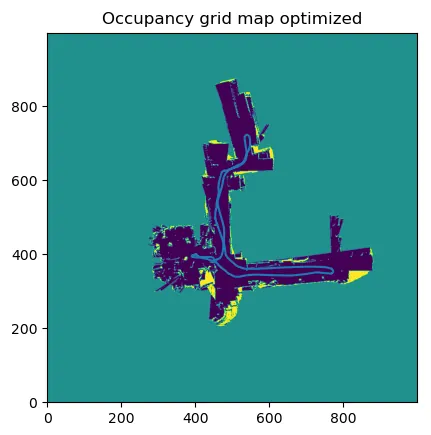

01 / Data
Four sensors, four clocks.
A differential-drive robot drove through a building recording, each at its own rate:
- Wheel encoders on all four wheels, for distance travelled.
- An IMU, of which only the yaw rate is used, for turning.
- A Hokuyo 2D LiDAR: 270° field of view, 1,081 beams per scan, 30 m range.
- A Kinect RGB-D camera, whose frames arrive irregularly because the logger dropped some.
Every measurement is matched to the others by its timestamp. There is no ground truth: the only check on the result is whether the map is consistent with itself.
02 / Pipeline
Odometry, then scans, then the whole graph.
Odometry
Encoder ticks give each wheel’s distance and the IMU’s yaw rate gives the turning; a differential-drive model integrates them into a first trajectory. It is smooth but drifts, mostly in distance.
Scan matching
My own ICP aligns each LiDAR scan to the previous one: nearest neighbours from a KD-tree, then the best rotation and translation in closed form by SVD (the Kabsch solution), repeated until the error stops falling. ICP starts from the odometry guess, and a match whose rotation disagrees with odometry is rejected, because ICP on its own falls into wrong local minima in long corridors.
Pose graph
Each pose is a node in a GTSAM factor graph. Consecutive poses are joined by their ICP alignment; extra ICP constraints join scans further apart, and the first scan to the last where the robot comes back. Levenberg–Marquardt then finds the trajectory that best agrees with all of them at once.
Maps
Every scan is ray-cast into an occupancy grid at 5 cm: Bresenham lines mark the cells a beam passed through as free and its end point as occupied. For the floor texture, Kinect disparity becomes depth, each pixel is projected into the world from the robot’s pose, and pixels near floor height colour the map.
03 / Results
Corridors that line up.



04 / Limits
Judged by the map, not a number.
- With no ground truth, accuracy can only be judged by how straight and single the walls come out.
- Loop constraints come from chosen pairs of scans rather than from recognising revisited places; automatic loop detection is the next step.
- On the second log, ICP fell into wrong minima until its result was kept close to the odometry estimate.